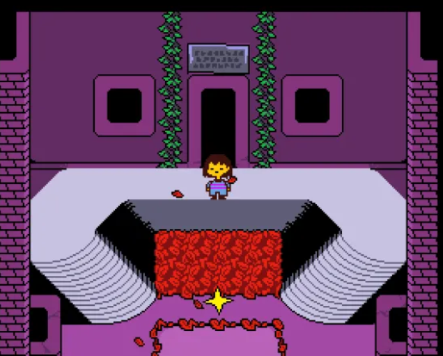

Napstablook
Un dels primers combats destacats de la zona. És un personatge molt peculiar i ajuda a mostrar que a Undertale els enfrontaments no són sempre com en altres RPG.
La primera gran zona d'Undertale
Ruins és la primera zona important del joc i el lloc on comença l'aventura del protagonista. Es tracta d’un espai subterrani ple de passadissos, sales antigues i puzles senzills que ajuden el jugador a entendre el funcionament bàsic del joc.
Aquesta zona té un ambient tranquil però també misteriós. Els colors foscos, les ruïnes de pedra i la música creen una sensació de calma i curiositat. És una zona pensada per introduir el món d’Undertale de manera progressiva.

A Ruins el jugador aprèn a resoldre puzles senzills i a moure’s per sales amb interruptors, trampes i camins amagats. També és la zona on s’introdueixen els primers combats i les opcions d’actuar o perdonar els enemics.
Un dels primers combats destacats de la zona. És un personatge molt peculiar i ajuda a mostrar que a Undertale els enfrontaments no són sempre com en altres RPG.

Dummy és un dels primers enfrontaments del joc i serveix per introduir al jugador en el sistema de combat d’Undertale.

És una figura molt important dins de Ruins. Acompanya el jugador durant una part de la zona i té un paper clau en aquest inici de l’aventura.